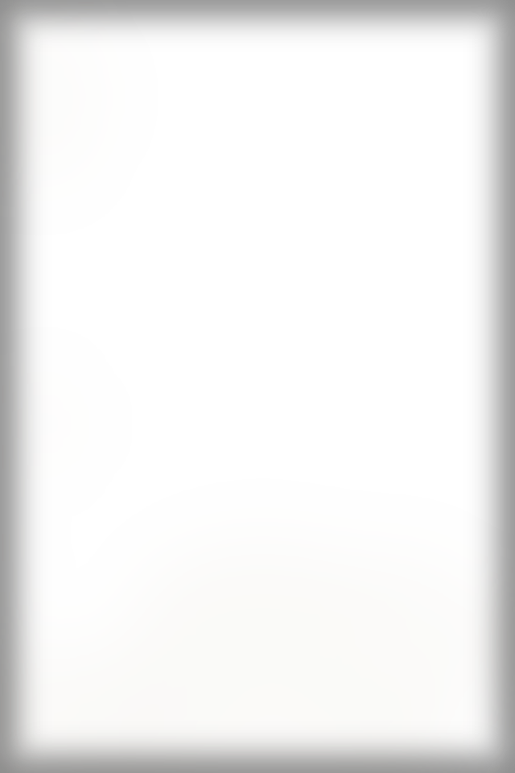
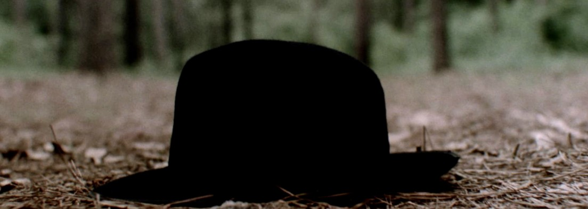

Lost and found
One black hat, found in the woods. Nobody chases a hat. Claim it at the check room.
HAT CHECK
No. 29
One black fedora.
The wind is
not our fault.
Danny Boy on the gramophone
SUPPER
Leo’s Irish stew
1.10
Lamb neck chops, potatoes, carrots, onions, stout.
Whiskey bread pudding
.40
Brioche, raisins soaked in the good Irish, custard.
Served in a teacup
THE BAR
Tom’s hot toddy
.75
Irish whiskey, honey, lemon, clove, cinnamon stick.
Rye, neat
.50
Off the boat, honest.
Coffee
.10
Really coffee.
NO MARKERS. NO CREDIT.
Short at the bill? Look in your heart, then your wallet.
Prices subject to change. Form HH-29. Printed 1929.